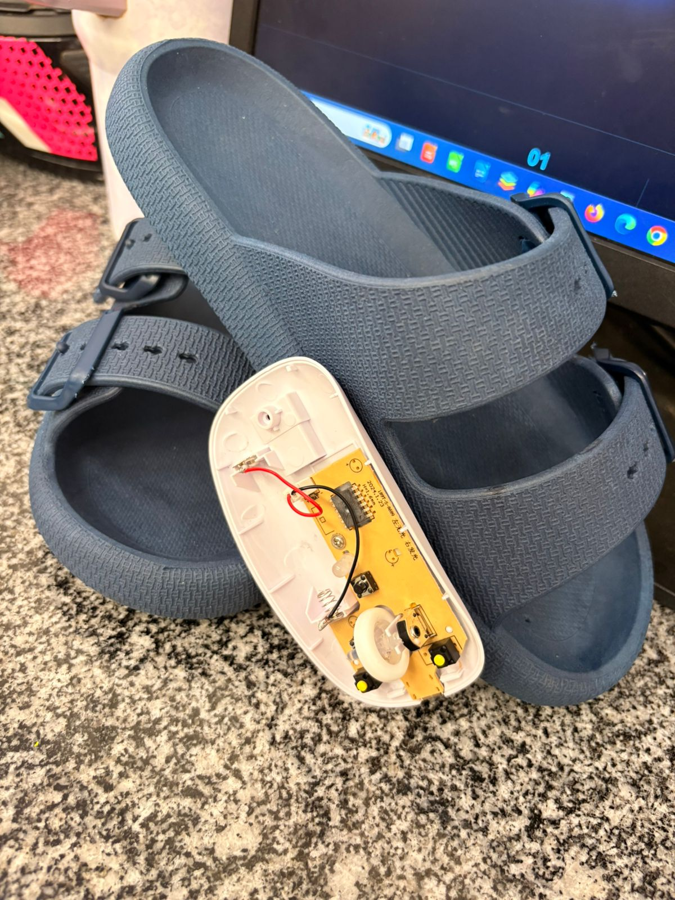

🦶
Você atravessou
O mundo do Foot Mouse
Role para baixo e entre.
↓
Existe um mundo feito para as mãos.
Aqui existe outro.
Um mundo em que o computador responde ao movimento dos pés.
01 Experimente
Mova. O mundo responde.
Chão · mova o mouse ou o dedo aqui
🦶
Tela · nosso site
Mova o pé para guiar o cursor, clique no chão para clicar na tela e use a rodinha (ou ↑ ↓) para rolar o site.
02 Não é só uma ideia
É um protótipo.
